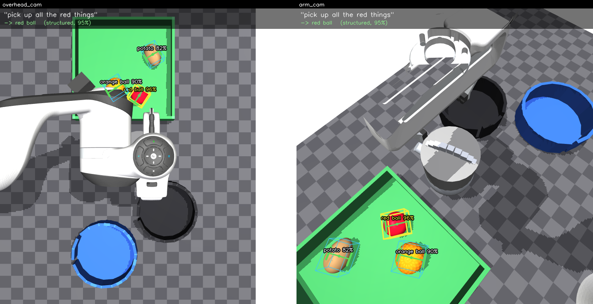
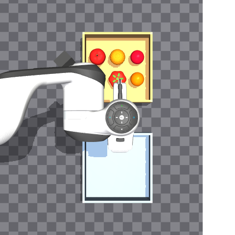
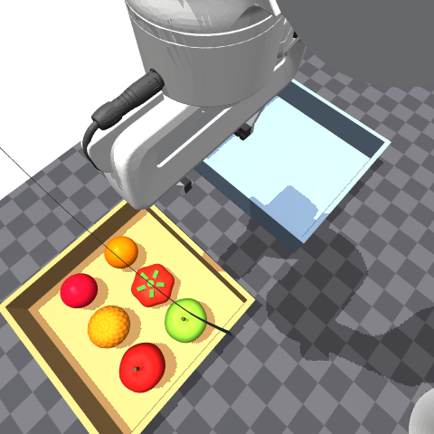

Personal research project · Franka Panda · MuJoCo · OWLv2 · asymmetric SAC
Jul 2026 – ongoing
In progress
Working: the randomised kitchen environment, a scripted expert solving
97.3% of 700 episodes, and a camera-only grounding stack measured at 4.7 mm position error
and 98% grasp validity. Not working: the learned policy — asymmetric SAC scored 0% across
every one of 51 evaluations. Not started: the CBF safety filter and the VLA stage.
All numbers re-measured 2026-10-01.
A Franka Panda in a randomised MuJoCo kitchen that takes commands like
"pick up all the apples" or "put the carrot in the blue bowl", works out which
objects the command refers to, and moves them into the container it names. Nothing is fixed between
episodes except the counter and the robot's mounting — object set, placement, container size, colour
and shape, and the number of destinations all resample.
The design constraint behind everything: a policy trained on privileged simulator state can
never be driven by a camera. It learns to depend on exact poses of occluded objects and
perfect labels, and swapping in real perception destroys it silently. So the policy reads
Detection objects from a perception interface, never the simulator — and the error of the
real detector is measured first, then used as the noise model the policy trains against.
scripted-expert episode success over 700 randomised episodes
4.7 mm
mean 3-D position error from cameras only (median 3.4, p90 7.2)
98%
of matched objects get a grasp that passes the gripper's real limits
69%
end-to-end referring accuracy — the number that actually bounds the system
"move all apples to the other container." Main view plus the overhead and wrist
cameras used for grounding. This is the scripted expert, which reads privileged state — it exists
to prove the task is solvable before any GPU time is spent on learning it."place all the balls into the grey basket." Different instruction type, different
randomised layout. Of 9 objects, 3 are red and 3 are orange — and "orange" is also a category —
so no single attribute resolves a command.
Where Each Piece Actually Stands
Listed this way because a system diagram makes everything look equally finished.
Instruction parser (rule-based, vocabulary from the catalog)
done
Asymmetric SAC, seeded with expert demos
trained, did not learn — 0% after 5.1M steps
CBF safety filter
not implemented — only a box clamp on commanded TCP
VLA stage
not started — the demo collector exists, no model fine-tuned
Camera-Only Grounding · 40 Scenes, 166 Objects
Two cameras at 768 px RGB-D, OWLv2 in fp16. Images and a command in; identity, oriented box and a feasible grasp out.
Metric
Value
Reading
Recall
154/166 = 93%
0 spurious detections
Position error
◆ 4.7 mm mean
median 3.4, p90 7.2
Extent error
3.2 mm per axis
—
Yaw error, elongated objects
4.6° mean
median 3.4°
Grasp validity
◆ 151/154 = 98%
against real jaw limits
Label accuracy
114/154 = 74%
86% excluding the orange fruit
Latency
0.65 s per scene
2 views — far too slow for an RL loop
The failures are systematic, not random. The model never once told the orange
fruit from the orange ball (0/21) — two spheres of near-identical hue separated only by a texture
that 768 px does not resolve. It called the red apple a red ball 9 times out of 18. That structure
is why the noise model injected during training confuses red apple ↔ red tomato ↔ red ball
specifically, rather than scrambling labels uniformly: uniform noise would teach the policy that
labels are worthless, while the real confusion structure teaches it to fall back on shape.
End-to-End Referring · The Number That Bounds Everything
RGB-D plus the instruction text against the ground-truth target set. 80 episodes.
Instruction type
Correct
Specific object — "the carrot"
10/11
91%
Colour — "the red things"
14/16
88%
Category — "the apples"
6/8
75%
Everything — "all the items"
16/24
67%
Kind — "all the produce"
9/21
◆ 43%
Overall
55/80
69%
Grounding one named object is nearly solved; resolving a set is not. Accuracy falls as the
command requires more objects to be right at once — "all the produce" needs every one of 5–6
detections correct, and a single mislabelled orange sinks the episode. The parser is not the
problem: it scores 5000/5000 on held-out templates. This 69% is the real ceiling on the
whole system, and it is why the next work is detection quality rather than control.

"all the red things" grounded, lifted to 3-D oriented boxes

Overhead camera — placed above the elbow, not looking at it

Forearm camera, 12 cm off centreline — measured, not guessed
The Learned Policy Did Not Learn
Asymmetric SAC: actor on noisy camera-derived observations, privileged critic discarded at deployment. 10 envs, replay seeded with 400 expert episodes (48k transitions), 5.1M steps over ~7.3 h.
Signal
Result
What it means
In-training evaluations
◆ 0% on all 51
never once solved an episode
Entropy temperature α
0.031 → ~0
exploration switched itself off
Return
settled at −3.0
exactly the −0.01/step time penalty
Re-eval, 50 held-out seeds
0/50 solved, grasped in 4/50
expert solved 50/50 on the same seeds
Reported as it happened. α decaying to zero while success stays flat is the
diagnostic: the critic saw no terminal rewards worth chasing, so it learned that everything is worth
about −3, and SAC's automatic temperature tuning correctly concluded there was nothing left to
explore for. Seeding the buffer with expert episodes was supposed to prevent exactly this and did
not — 48k expert transitions against 5.1M environment steps is a rounding error in the replay
buffer. The levers left are curriculum order (start on the reach-only task) and a far higher
demo-to-rollout ratio.
Decisions That Took Measurement
Each was a real bug or a wrong answer at some point.
01A hardcoded workspace clamp made a whole container unreachable. The commanded-TCP box
started at x ≥ 0.20, but the secondary bowl sits where x drops to 0.11 — so
every object in it was kinematically reachable and forbidden by the environment. Nothing
raised an error; it presented as a grasping failure. Worth 5 points of expert success.
02Grasp detection needed hysteresis. A held capsule rolls and one pad breaks contact for a
single frame. With a strict two-finger test every step the carrot was "dropped" mid-lift at
exactly its correct 29 mm jaw width. Acquiring needs both fingers; keeping needs one plus
proximity. That single change took the expert from 86% to 94%.
03Tuning on an isolated object was anti-correlated with the real distribution. An isolated
grasp sweep picked a −0.012 offset as a clean 100%; on crowded six-object episodes that same
offset scores 25%. Not noisy — pointing the wrong way.
04Contact had to be tuned before anything else was trustworthy. 2 ms steps, implicitfast
integrator, elliptic friction cones, impratio 10, condim 6 so rolling friction applies, fingertip
friction 1.8/0.08/0.02, and a gripper servo 6× stiffer than the Menagerie default with
gainprm rescaled so the control range still means the same thing. Before this, grips crept.
05Orientation is encoded as cos 2θ / sin 2θ, not θ. A parallel jaw is symmetric under a half
turn, so a carrot at +80° and one at −100° need the same wrist angle. The raw angle
makes two identical situations look maximally different and puts a discontinuity at ±90°, in the
middle of the useful range.
06Every failure the expert has is a timeout, not a mistake. Over 700 episodes: 0
misplacements, 0 drops. Commands with 1–3 targets are 379/379. Five-target commands are 39/46.
The expert is not fragile, it is slow — which is the right failure mode for a benchmark whose job
is to prove the task solvable.
My contribution
The whole system: procedurally generated scene and object meshes, the randomised layout sampler,
the semantics catalog and instruction parser, the privileged/unprivileged perception boundary, the
OWLv2 grounding pipeline through to grasp synthesis, the DLS IK with null-space posture control,
the scripted FSM expert, the asymmetric SAC implementation, and the evaluation suite behind every
number here.
Upstream
Franka Panda from MuJoCo Menagerie (Apache-2.0) with documented local modifications — the stock
gripper is far too weak, stiffened 6×. OWLv2 detector weights, used frozen.